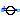
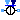
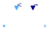
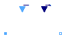

This package hosts sources for quasi stationary single phase circuits. Quasi stationary theory for single phase circuits can be found in the references.
Extends from Modelica.Icons.SourcesPackage (Icon for packages containing sources).
| Name | Description |
|---|---|
|  VoltageSource | Constant AC voltage |
| Variable AC voltage | |
| Constant AC current | |
|  VariableCurrentSource | Variable AC current |

This is a constant voltage source, specifying the complex voltage by the RMS voltage and the phase shift.
VariableVoltageSource, CurrentSource, VariableCurrentSource
Extends from Interfaces.Source (Partial voltage / current source).
| Type | Name | Default | Description |
|---|---|---|---|
| Frequency | f | frequency of the source [Hz] | |
| Voltage | V | RMS voltage of the source [V] | |
| Angle | phi | phase shift of the source [rad] |
| Type | Name | Description |
|---|---|---|
| PositivePin | pin_p | Positive pin |
| NegativePin | pin_n | Negative pin |
model VoltageSource "Constant AC voltage" extends Interfaces.Source; parameter Modelica.SIunits.Frequency f(start=1) "frequency of the source"; parameter Modelica.SIunits.Voltage V(start=1) "RMS voltage of the source"; parameter Modelica.SIunits.Angle phi(start=0) "phase shift of the source"; equation omega = 2*Modelica.Constants.pi*f; v = Complex(V*cos(phi), V*sin(phi));end VoltageSource;

This is a voltage source with a complex signal input, specifying the complex voltage by the complex RMS voltage components. Additionally, the frequency of the voltage source is defined by a real signal input.
VoltageSource, CurrentSource, VariableCurrentSource
Extends from Interfaces.Source (Partial voltage / current source).
| Type | Name | Description |
|---|---|---|
| PositivePin | pin_p | Positive pin |
| NegativePin | pin_n | Negative pin |
| input RealInput | f | |
| input ComplexInput | V |
model VariableVoltageSource "Variable AC voltage" extends Interfaces.Source;Modelica.Blocks.Interfaces.RealInput f; Modelica.ComplexBlocks.Interfaces.ComplexInput V; equation omega = 2*Modelica.Constants.pi*f; v = V;end VariableVoltageSource;
This is a constant current source, specifying the complex current by the RMS current and the phase shift.
VoltageSource, VariableVoltageSource, VariableCurrentSource
Extends from Interfaces.Source (Partial voltage / current source).
| Type | Name | Default | Description |
|---|---|---|---|
| Frequency | f | frequency of the source [Hz] | |
| Current | I | RMS current of the source [A] | |
| Angle | phi | phase shift of the source [rad] |
| Type | Name | Description |
|---|---|---|
| PositivePin | pin_p | Positive pin |
| NegativePin | pin_n | Negative pin |
model CurrentSource "Constant AC current" extends Interfaces.Source; parameter Modelica.SIunits.Frequency f(start=1) "frequency of the source"; parameter Modelica.SIunits.Current I(start=1) "RMS current of the source"; parameter Modelica.SIunits.Angle phi(start=0) "phase shift of the source"; equation omega = 2*Modelica.Constants.pi*f; i = Complex(I*cos(phi), I*sin(phi));end CurrentSource;

This is a current source with a complex signal input, specifying the complex current by the complex RMS current components. Additionally, the frequency of the voltage source is defined by a real signal input.
VoltageSource, VariableVoltageSource, CurrentSource,
Extends from Interfaces.Source (Partial voltage / current source).
| Type | Name | Description |
|---|---|---|
| PositivePin | pin_p | Positive pin |
| NegativePin | pin_n | Negative pin |
| input RealInput | f | |
| input ComplexInput | I |
model VariableCurrentSource "Variable AC current" extends Interfaces.Source;Modelica.Blocks.Interfaces.RealInput f; Modelica.ComplexBlocks.Interfaces.ComplexInput I; equation omega = 2*Modelica.Constants.pi*f; i = I;end VariableCurrentSource;